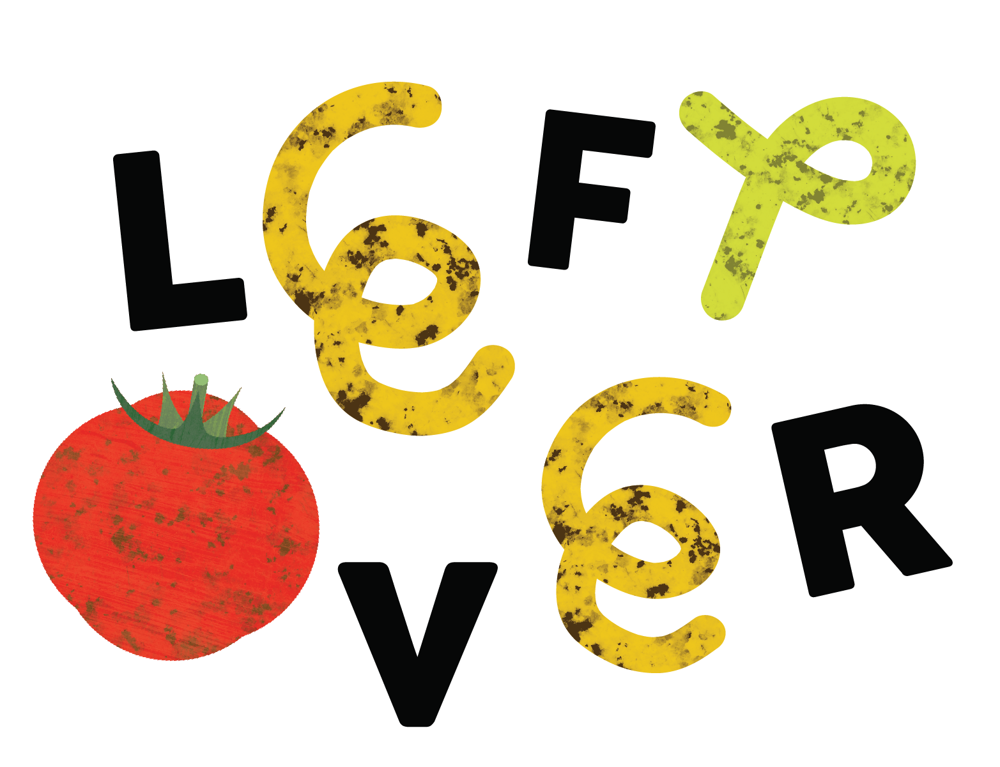

ร่วมกันลดขยะอาหาร
ให้ทุกคนตระหนักและร่วมกันส่วนหนึ่งในการอนุรักษ์ธรรมชาติและสิ่งแวดล้อม
ให้โลกของเราน่าอยู่ต่อไป เรื่องง่าย ๆ เริ่มทำได้ด้วยตัวเอง
กลับหน้าแรก ร่วมกันลดขยะอาหาร
ให้ทุกคนตระหนักและร่วมกันส่วนหนึ่งในการอนุรักษ์ธรรมชาติและสิ่งแวดล้อม
ให้โลกของเราน่าอยู่ต่อไป เรื่องง่าย ๆ
เริ่มทำได้ด้วยตัวเอง
กลับหน้าแรก